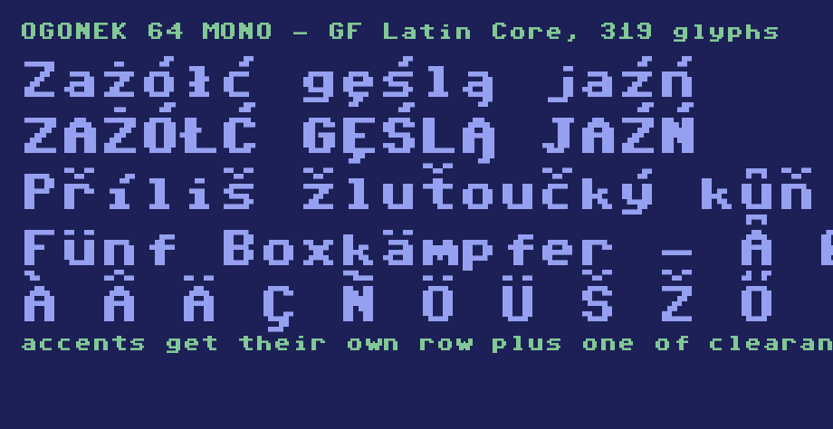

Ogonek 64 is a pixel typeface built on an 8×12 grid, designed around a question that 8-bit home computers never had to answer: what happens when the alphabet needs diacritics? The character sets burned into 1980s ROMs covered unaccented Latin and nothing more, so every Polish, Czech or Hungarian text rendered in a retro pixel font falls back to a smooth system typeface mid-word. Ogonek 64 closes that gap while keeping the blocky, phosphor-lit character of the era.
The family takes its name from the ogonek — the little tail under ą and ę, and the official Unicode name of that mark. It covers the full GF Latin Core glyph set: 319 characters spanning Western, Central and Northern European languages, plus combining diacritical marks, currency symbols and punctuation. Every glyph is composed of whole pixels aligned to the grid, so the outlines stay crisp at the sizes where pixel fonts are meant to live.

Fitting European accents into a pixel grid turned out to be the hard part of the design. An accent squeezed directly on top of a capital letter merges with it — a dotted Ż reads as a plain Z with a bump. Ogonek 64 therefore reserves two rows for the accent and a third as breathing space, which is why the cell is twelve pixels tall rather than eight. That extra height is what makes the circumflex, caron, breve, ring and double acute tell each other apart at all: in a single row of eight pixels they collapse into the same smudge.
A related decision shaped Ź and Ż. In an early draft the two differed only by shifting the mark one pixel sideways, which proved invisible on screen. In the released font they differ by weight instead — a two-pixel stroke against a one-pixel dot. The stroke through Ł and ł is likewise derived from the position of each letter's stem, since a hard-coded stroke that suits the capital slides straight off the narrow lowercase form.
The family ships in four styles. Mono comes in Regular and Bold and holds a fixed advance width, which suits terminals, code editors and anything that expects a grid. Sans spaces each letter by its actual width, for running text. CRT adds horizontal scanline gaps and a slight rightward bleed, approximating the phosphor persistence of a cathode-ray display.
Glyph sources are kept as plain text files, one line per pixel row, so the design can be read and edited without a font editor and the build is fully reproducible.